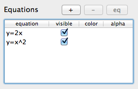

Equations can be added to graphs on your worksheet using the Property Panel interface.
Equations
Graph with equation y=x2
-
Add EquationTo add an equation to a graph follow these steps:
- Click with the left mouse button the graph you would like to add an equation to. Optionally you can select multiple graphs by clicking on several graphs while holding the Shift or ⌘ key.
-
Click the "+" button in the Equations section located in the Property Panel.

Equations section of the Property Panel
-
In the Equation drop down enter the equation you would like to graph.
 Equations dropdown
Equations dropdown
After entering your equation press "Submit".
See this article to find out more about the types of equations GraphPouch recognizes.
- Click with the left mouse button the graph you would like to add an equation to. Optionally you can select multiple graphs by clicking on several graphs while holding the Shift or ⌘ key.
-
Remove EquationTo remove a equation follow these steps:
- Click with the left mouse button the graph you would like to remove. Optionally you can select multiple equations by clicking on several graphs while holding the Shift or ⌘ key.
-
Click the "-" button in the Equations section located in the Property Panel or press the Delete key.
 Equation selected in Property Panel
Equation selected in Property Panel
- Click with the left mouse button the graph you would like to remove. Optionally you can select multiple equations by clicking on several graphs while holding the Shift or ⌘ key.
-
Relevant Topics